ЛР2. Простой сайт на Django
Цель работы
Освоить разработку веб-сервиса на Django: модели и связи между ними, представления, шаблоны, формы, регистрацию пользователей и админ-панель. Я сделал сайт по варианту 5 «Список научных конференций» на Django и PostgreSQL. Перед лабораторной я выполнил практики 2.1-2.3, они описаны в конце отчёта.
Вариант определяется по номеру в журнале. Мой номер 17, вариантов 6, поэтому вариант считается как (17 - 1) mod 6 + 1 = 5.
Задание варианта
Сайт хранит названия конференций, список тематик, место проведения, период проведения, описание конференции, описание места проведения и условия участия. Нужно реализовать:
- регистрацию новых пользователей;
- просмотр конференций и регистрацию авторов для выступлений, причём пользователь может редактировать и удалять свои регистрации;
- отзывы к конференциям: даты конференции, текст, рейтинг от 1 до 10 и информация о комментаторе;
- указание администратором результата выступления (рекомендован к публикации или нет) средствами Django-admin;
- таблицу всех участников по конференциям в клиентской части.
Для максимального балла я также сделал оформление на Bootstrap, пагинацию, поиск и фильтрацию на страницах с пагинацией и разграничение прав администратора и пользователя прямо в клиентском интерфейсе.
Технологии
| Что | Версия | Зачем |
|---|---|---|
| Python | 3.13 | язык проекта |
| Django | 5.2 (LTS) | фреймворк, ORM, админ-панель, авторизация |
| PostgreSQL | 18 | СУБД по заданию |
| psycopg | 3.3 | драйвер, через который Django подключается к PostgreSQL |
| python-dotenv | 1.2 | читает настройки из файла .env |
| Bootstrap | 5.3 | оформление интерфейса, подключён через CDN |
В задании упоминается Jinja2, но в практиках 2.1-2.3 используется встроенный шаблонизатор Django (DTL). Я тоже взял DTL: синтаксис у них почти одинаковый ({{ }}, {% %}), а проверка {% if user.is_staff %} из требований написана именно для DTL.
Django 5.2 я выбрал, потому что это LTS-версия с поддержкой до 2028 года. В ней есть тег {% querystring %} (появился в 5.1), он нужен для пагинации вместе с фильтрами.
Структура проекта
laboratory_work_2/
conference_project/ настройки проекта (settings.py, urls.py)
conferences/ приложение: models, views, forms, urls, admin
fixtures/demo_data.json демо-данные
migrations/
templates/ шаблоны (base.html, conferences/, registration/)
static/css/style.css
requirements.txt
.env.example
manage.py
Модель данных
В модели пять таблиц. Связи между ними я показал на ER-диаграмме.
erDiagram
User ||--o{ Participation : "регистрирует доклад"
User ||--o{ Review : "пишет"
Conference ||--o{ Participation : "имеет доклады"
Conference ||--o{ Review : "имеет отзывы"
Conference }o--o{ Topic : "тематики"
User {
string username
string first_name
string last_name
string email
string organization
string academic_degree
bool is_staff
}
Topic {
string name
}
Conference {
string name
string venue
date start_date
date end_date
text description
text venue_description
text conditions
}
Participation {
string talk_title
text abstract
string result
datetime created_at
}
Review {
text text
int rating
datetime created_at
}Рис. 1. ER-диаграмма
Таблица 1. Модели и их назначение.
| Модель | Что хранит | Связи |
|---|---|---|
| User | пользователь сайта: логин, ФИО, email, организация, учёная степень | наследуется от AbstractUser |
| Topic | тематика (например, «Машинное обучение») | многие ко многим с Conference |
| Conference | конференция: название, место, даты начала и конца, описание, описание места, условия участия | тематики через ManyToManyField |
| Participation | регистрация автора на выступление: тема доклада, аннотация, результат | FK на User и FK на Conference |
| Review | отзыв: текст, рейтинг 1-10, дата отзыва | FK на User и FK на Conference |
Почему модель устроена так:
- Пользователя я расширил через
AbstractUser, как в практике 2.3. Для научной конференции полезно знать организацию и учёную степень автора, а стандартныйUserтаких полей не имеет. Модель указана вAUTH_USER_MODELдо первой миграции, потому что потом поменять её уже очень сложно. - Тематики вынесены в отдельную таблицу
Topic. Одна конференция охватывает несколько тематик, а одна тематика встречается у разных конференций, это связь многие ко многим. Отдельная таблица нужна, чтобы фильтровать конференции по тематике и не писать одно название по-разному. Participation(выступление) связывает пользователя и конференцию. Это отдельная модель, а не простое поле, потому что у регистрации есть свои данные: тема доклада, аннотация и результат. Параuser + conferenceуникальна (unique_together): на одну конференцию человек регистрируется один раз.- Результат выступления хранится в поле
resultс вариантами выбора (choices): «Не рассмотрен», «Рекомендован к публикации», «Не рекомендован». Новая регистрация получает «Не рассмотрен» по умолчанию. В админ-панели это выпадающий список, а в шаблоне подпись выводится черезget_result_display. - Даты конференции в отзыве я отдельно не копирую. Отзыв связан с конференцией через FK, поэтому даты берутся из неё и показываются в карточке каждого отзыва. Если бы я копировал даты в отзыв, после исправления дат конференции они бы разошлись.
- Рейтинг ограничен валидаторами
MinValueValidator(1)иMaxValueValidator(10). Форма не пропустит значение вне диапазона. on_delete=models.CASCADEу всех FK: если удалить конференцию или пользователя, его регистрации и отзывы удаляются вместе с ним, без «висящих» записей.
Код моделей (conferences/models.py):
from django.conf import settings
from django.contrib.auth.models import AbstractUser
from django.core.validators import MaxValueValidator, MinValueValidator
from django.db import models
class User(AbstractUser):
organization = models.CharField("Организация", max_length=200, blank=True)
academic_degree = models.CharField("Учёная степень", max_length=100, blank=True)
def __str__(self):
return self.get_full_name() or self.username
class Topic(models.Model):
name = models.CharField("Название", max_length=100, unique=True)
class Meta:
ordering = ["name"]
verbose_name = "Тематика"
verbose_name_plural = "Тематики"
def __str__(self):
return self.name
class Conference(models.Model):
name = models.CharField("Название", max_length=200)
topics = models.ManyToManyField(Topic, related_name="conferences", verbose_name="Тематики")
venue = models.CharField("Место проведения", max_length=200)
start_date = models.DateField("Дата начала")
end_date = models.DateField("Дата окончания")
description = models.TextField("Описание конференции")
venue_description = models.TextField("Описание места проведения")
conditions = models.TextField("Условия участия")
class Meta:
ordering = ["start_date"]
verbose_name = "Конференция"
verbose_name_plural = "Конференции"
def __str__(self):
return self.name
class Participation(models.Model):
RESULT_CHOICES = [
("pending", "Не рассмотрен"),
("recommended", "Рекомендован к публикации"),
("rejected", "Не рекомендован"),
]
user = models.ForeignKey(settings.AUTH_USER_MODEL, on_delete=models.CASCADE,
related_name="participations", verbose_name="Участник")
conference = models.ForeignKey(Conference, on_delete=models.CASCADE,
related_name="participations", verbose_name="Конференция")
talk_title = models.CharField("Тема доклада", max_length=300)
abstract = models.TextField("Аннотация")
result = models.CharField("Результат", max_length=20, choices=RESULT_CHOICES, default="pending")
created_at = models.DateTimeField("Дата регистрации", auto_now_add=True)
class Meta:
ordering = ["conference__start_date", "user__last_name"]
unique_together = ["user", "conference"]
verbose_name = "Выступление"
verbose_name_plural = "Выступления"
def __str__(self):
return f"{self.user}: {self.talk_title}"
class Review(models.Model):
user = models.ForeignKey(settings.AUTH_USER_MODEL, on_delete=models.CASCADE,
related_name="reviews", verbose_name="Автор")
conference = models.ForeignKey(Conference, on_delete=models.CASCADE,
related_name="reviews", verbose_name="Конференция")
text = models.TextField("Текст отзыва")
rating = models.PositiveSmallIntegerField(
"Рейтинг", validators=[MinValueValidator(1), MaxValueValidator(10)])
created_at = models.DateTimeField("Дата отзыва", auto_now_add=True)
class Meta:
ordering = ["-created_at"]
verbose_name = "Отзыв"
verbose_name_plural = "Отзывы"
def __str__(self):
return f"{self.user} о {self.conference}"
Настройки и подключение к PostgreSQL
Секретный ключ и пароль от базы не хранятся в коде. Они лежат в файле .env, который не попадает в репозиторий (он в .gitignore). В репозитории есть только шаблон .env.example.
DATABASES = {
"default": {
"ENGINE": "django.db.backends.postgresql",
"NAME": os.getenv("DB_NAME"),
"USER": os.getenv("DB_USER"),
"PASSWORD": os.getenv("DB_PASSWORD"),
"HOST": os.getenv("DB_HOST", "localhost"),
"PORT": os.getenv("DB_PORT", "5432"),
}
}
SECRET_KEY=change-me
DEBUG=True
DB_NAME=conferences_db
DB_USER=postgres
DB_PASSWORD=your_password
DB_HOST=localhost
DB_PORT=5432
Запуск проекта:
pip install -r requirements.txt
copy .env.example .env (вписать свои данные PostgreSQL)
python manage.py migrate
python manage.py loaddata demo_data
python manage.py runserver
Демо-данные (loaddata demo_data) содержат 7 конференций, 7 тематик, 7 пользователей, 15 регистраций и 5 отзывов. Администратор admin с паролем admin12345, обычные пользователи, например kuznetsov с паролем test12345.
Адреса сайта
Таблица 2. Маршруты приложения (conferences/urls.py).
| URL | Представление | Кто может открыть |
|---|---|---|
/ |
список конференций с поиском, фильтром и пагинацией | все |
/conference/<id>/ |
страница конференции и отзывы | все |
/conference/<id>/register/ |
регистрация доклада | вошедший пользователь |
/conference/<id>/review/ |
новый отзыв | вошедший пользователь |
/my/ |
мои регистрации | вошедший пользователь |
/participation/<id>/edit/, /delete/ |
изменить или удалить регистрацию | только её автор |
/participation/<id>/result/ |
поставить результат | только is_staff |
/participants/ |
таблица участников с поиском, фильтрами и пагинацией | все |
/review/<id>/delete/ |
удалить отзыв | автор отзыва или is_staff |
/signup/, /accounts/login/ |
регистрация и вход | все |
/admin/ |
Django-admin | is_staff |
from django.urls import path
from . import views
urlpatterns = [
path("", views.ConferenceListView.as_view(), name="conference_list"),
path("conference/<int:pk>/", views.ConferenceDetailView.as_view(), name="conference_detail"),
path("conference/<int:pk>/register/", views.ParticipationCreateView.as_view(),
name="participation_create"),
path("conference/<int:pk>/review/", views.ReviewCreateView.as_view(), name="review_create"),
path("my/", views.MyParticipationListView.as_view(), name="my_participations"),
path("participation/<int:pk>/edit/", views.ParticipationUpdateView.as_view(),
name="participation_update"),
path("participation/<int:pk>/delete/", views.ParticipationDeleteView.as_view(),
name="participation_delete"),
path("participation/<int:pk>/result/", views.set_result, name="set_result"),
path("participants/", views.ParticipantListView.as_view(), name="participant_list"),
path("review/<int:pk>/delete/", views.ReviewDeleteView.as_view(), name="review_delete"),
path("signup/", views.SignUpView.as_view(), name="signup"),
]
Интерфейсы
Регистрация и вход
Форма регистрации построена на стандартной UserCreationForm. Я указал в ней свою модель и добавил поля организации и учёной степени. После регистрации пользователь сразу входит на сайт через login(), ему не нужно вводить пароль второй раз.
class SignUpForm(UserCreationForm):
class Meta:
model = User
fields = ["username", "first_name", "last_name", "email", "organization", "academic_degree"]
class SignUpView(CreateView):
form_class = SignUpForm
template_name = "registration/signup.html"
def form_valid(self, form):
user = form.save()
login(self.request, user)
return redirect("conference_list")
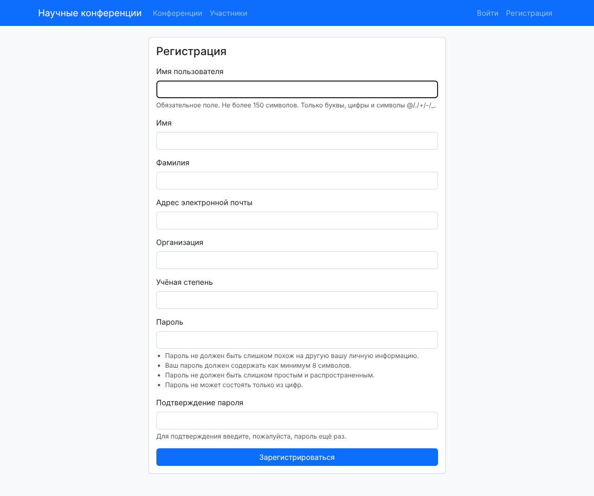
Рис. 2. Форма регистрации нового пользователя
Вход и выход работают через встроенные представления django.contrib.auth.urls, я написал только шаблон registration/login.html. Выход в Django 5 делается POST-запросом, поэтому кнопка «Выйти» в шапке это маленькая форма с {% csrf_token %}.
Список конференций: поиск, фильтр и пагинация
Главная страница показывает конференции карточками по 4 на страницу. Сверху строка поиска (ищет по названию, описанию и месту) и выпадающий список тематик.
class ConferenceListView(ListView):
model = Conference
paginate_by = 4
def get_queryset(self):
queryset = Conference.objects.prefetch_related("topics")
q = self.request.GET.get("q", "")
topic = self.request.GET.get("topic", "")
if q:
queryset = queryset.filter(
Q(name__icontains=q) | Q(description__icontains=q) | Q(venue__icontains=q))
if topic.isdigit():
queryset = queryset.filter(topics__id=topic)
return queryset
def get_context_data(self, **kwargs):
context = super().get_context_data(**kwargs)
context["topics"] = Topic.objects.all()
return context
Как это работает:
paginate_by = 4включает пагинацию:ListViewсам режет список и передаёт в шаблон объектpage_objс номером страницы.- В
get_queryset()я беру параметрыqиtopicиз GET-запроса и сужаю выборку.Q(...) | Q(...)это условие «ИЛИ»: конференция подходит, если слово есть хотя бы в одном из трёх полей.icontainsищет подстроку без учёта регистра. topic.isdigit()защищает от адреса вида?topic=abc: без проверки Django упал бы с ошибкой 500 при попытке сравнить id со строкой.prefetch_related("topics")загружает тематики всех конференций одним дополнительным запросом, а не отдельным запросом на каждую карточку.
Пагинацию я вынес в отдельный шаблон pagination.html и подключаю его через {% include %} на двух страницах. Главная проблема пагинации с фильтром в том, что ссылка ?page=2 теряет параметры поиска. Тег {% querystring page=... %} берёт текущие GET-параметры и заменяет только page, поэтому со страницы ?topic=2 ссылка ведёт на ?topic=2&page=2.
{% if page_obj.has_other_pages %}
<nav>
<ul class="pagination justify-content-center">
{% if page_obj.has_previous %}
<li class="page-item"><a class="page-link" href="{% querystring page=page_obj.previous_page_number %}">Назад</a></li>
{% else %}
<li class="page-item disabled"><span class="page-link">Назад</span></li>
{% endif %}
{% for num in page_obj.paginator.page_range %}
<li class="page-item {% if num == page_obj.number %}active{% endif %}">
<a class="page-link" href="{% querystring page=num %}">{{ num }}</a>
</li>
{% endfor %}
{% if page_obj.has_next %}
<li class="page-item"><a class="page-link" href="{% querystring page=page_obj.next_page_number %}">Вперёд</a></li>
{% else %}
<li class="page-item disabled"><span class="page-link">Вперёд</span></li>
{% endif %}
</ul>
</nav>
{% endif %}
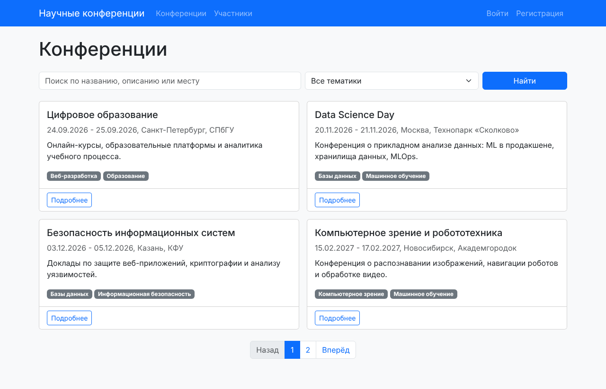
Рис. 3. Список конференций, первая страница из двух
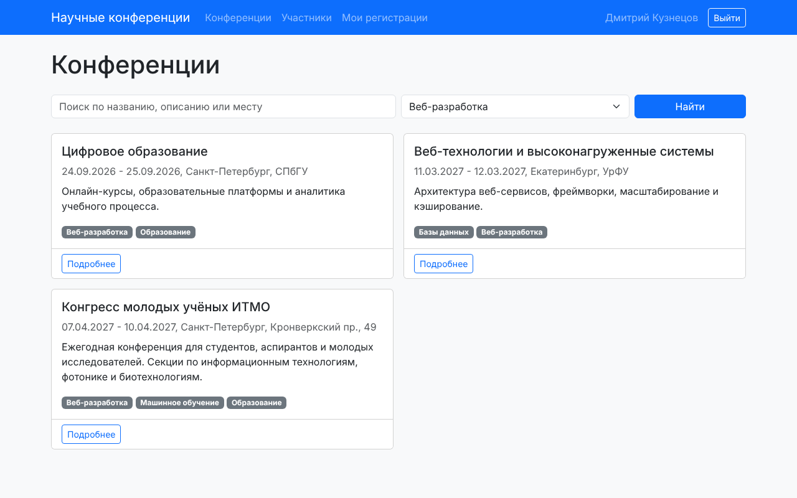
Рис. 4. Фильтр по тематике «Веб-разработка»: найдено 3 конференции из 7
Страница конференции
На странице конференции выводятся все поля из задания, тематики, число докладов и средний рейтинг. Средний рейтинг считается в базе через aggregate(Avg("rating")), а не циклом в Python. Если пользователь уже зарегистрирован, вместо кнопки регистрации он видит свой доклад и его результат.
class ConferenceDetailView(DetailView):
model = Conference
def get_context_data(self, **kwargs):
context = super().get_context_data(**kwargs)
conference = self.object
context["reviews"] = conference.reviews.select_related("user")
context["avg_rating"] = conference.reviews.aggregate(Avg("rating"))["rating__avg"]
if self.request.user.is_authenticated:
context["my_participation"] = conference.participations.filter(
user=self.request.user).first()
return context
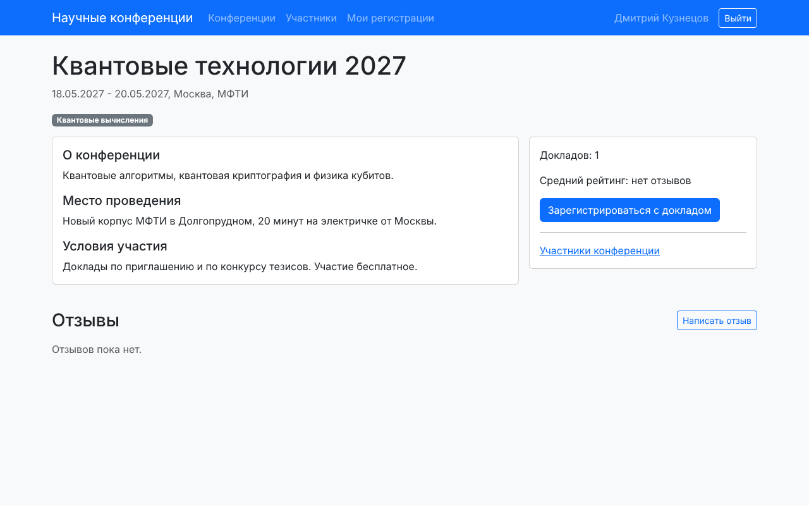
Рис. 5. Страница конференции «Квантовые технологии 2027» для обычного пользователя
Регистрация доклада и свои регистрации
Регистрацию доклада делает ParticipationCreateView. В форме только тема и аннотация: пользователя и конференцию я подставляю в form_valid(), иначе пользователь мог бы подменить их в HTML-форме.
class ParticipationCreateView(LoginRequiredMixin, CreateView):
form_class = ParticipationForm
template_name = "conferences/participation_form.html"
success_url = reverse_lazy("my_participations")
def dispatch(self, request, *args, **kwargs):
self.conference = get_object_or_404(Conference, pk=kwargs["pk"])
if request.user.is_authenticated and self.conference.participations.filter(
user=request.user).exists():
messages.warning(request, "Вы уже зарегистрированы на эту конференцию.")
return redirect("my_participations")
return super().dispatch(request, *args, **kwargs)
def get_context_data(self, **kwargs):
context = super().get_context_data(**kwargs)
context["conference"] = self.conference
return context
def form_valid(self, form):
form.instance.user = self.request.user
form.instance.conference = self.conference
messages.success(self.request, "Вы зарегистрированы как автор доклада.")
return super().form_valid(form)
LoginRequiredMixin отправляет гостя на страницу входа. В dispatch() я проверяю, нет ли уже регистрации на эту конференцию. Ограничение unique_together в модели на это не годится: поля user и conference не входят в форму, поэтому форма их уникальность не проверяет, и повторная регистрация закончилась бы ошибкой базы данных.
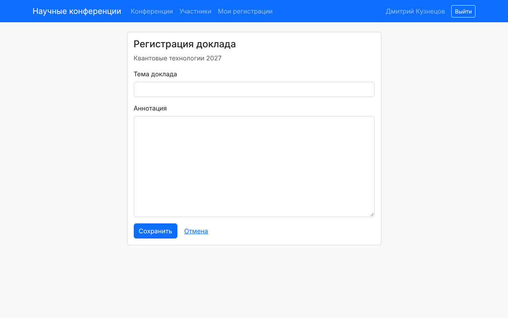
Рис. 6. Форма регистрации доклада
Свои регистрации пользователь видит на странице «Мои регистрации». Там же кнопки «Изменить» и «Удалить».
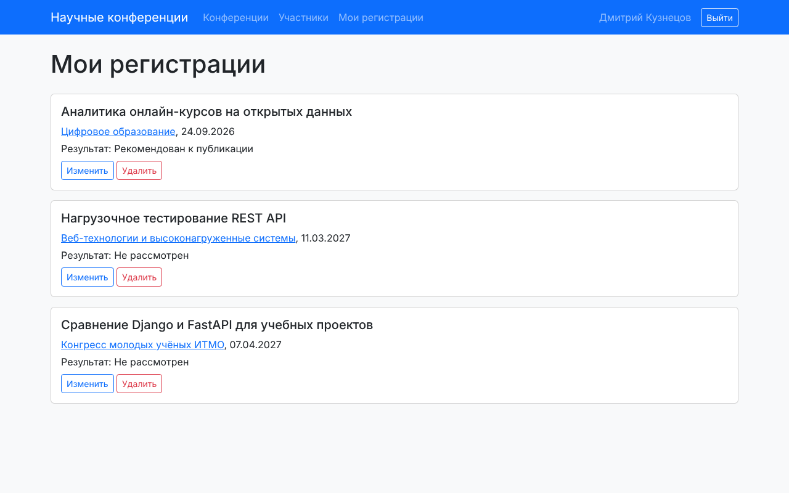
Рис. 7. Регистрации пользователя Дмитрий Кузнецов с результатами
Изменить или удалить можно только свою регистрацию. Для этого get_queryset() в представлениях изменения и удаления возвращает только записи текущего пользователя. Если открыть /participation/<чужой id>/edit/, Django не найдёт объект в этой выборке и вернёт 404.
class MyParticipationListView(LoginRequiredMixin, ListView):
template_name = "conferences/my_participations.html"
def get_queryset(self):
return Participation.objects.filter(user=self.request.user).select_related("conference")
class ParticipationUpdateView(LoginRequiredMixin, UpdateView):
form_class = ParticipationForm
success_url = reverse_lazy("my_participations")
def get_queryset(self):
return Participation.objects.filter(user=self.request.user)
def get_context_data(self, **kwargs):
context = super().get_context_data(**kwargs)
context["conference"] = self.object.conference
return context
class ParticipationDeleteView(LoginRequiredMixin, DeleteView):
success_url = reverse_lazy("my_participations")
def get_queryset(self):
return Participation.objects.filter(user=self.request.user)
Отзывы
Отзыв пишет вошедший пользователь. В карточке отзыва выводятся автор и его организация, рейтинг, даты конференции и дата отзыва. Удалить отзыв может его автор или администратор, это тоже решается в get_queryset().
class ReviewForm(forms.ModelForm):
class Meta:
model = Review
fields = ["rating", "text"]
widgets = {"rating": forms.NumberInput(attrs={"min": 1, "max": 10})}
class ReviewDeleteView(LoginRequiredMixin, DeleteView):
model = Review
def get_queryset(self):
if self.request.user.is_staff:
return Review.objects.all()
return Review.objects.filter(user=self.request.user)
def get_success_url(self):
return reverse("conference_detail", args=[self.object.conference.pk])
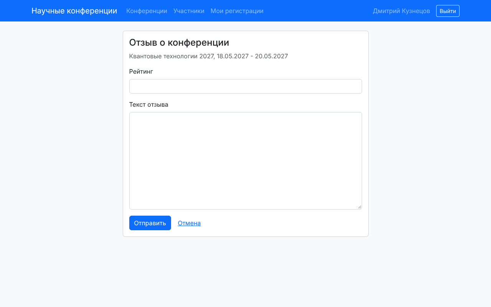
Рис. 8. Форма отзыва, рейтинг ограничен значениями от 1 до 10
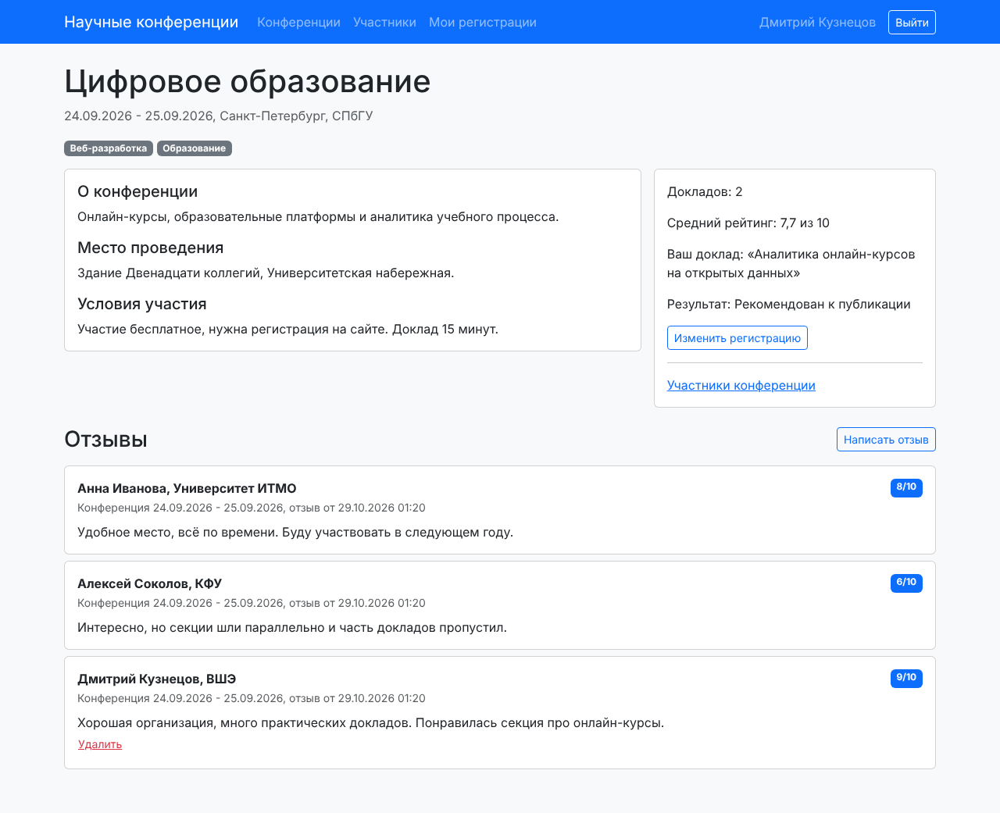
Рис. 9. Отзывы о конференции «Цифровое образование» и средний рейтинг 7,7
Таблица участников по конференциям
Таблица показывает все регистрации: конференцию, участника, организацию, тему доклада и результат. Можно искать по фамилии, имени или теме, выбрать конференцию и результат. На странице 6 строк, пагинация сохраняет фильтры так же, как на главной.
class ParticipantListView(ListView):
template_name = "conferences/participant_list.html"
paginate_by = 6
def get_queryset(self):
queryset = Participation.objects.select_related("user", "conference")
q = self.request.GET.get("q", "")
conference = self.request.GET.get("conference", "")
result = self.request.GET.get("result", "")
if q:
queryset = queryset.filter(
Q(user__last_name__icontains=q) | Q(user__first_name__icontains=q)
| Q(talk_title__icontains=q))
if conference.isdigit():
queryset = queryset.filter(conference_id=conference)
if result:
queryset = queryset.filter(result=result)
return queryset
def get_context_data(self, **kwargs):
context = super().get_context_data(**kwargs)
context["conferences"] = Conference.objects.all()
context["result_choices"] = Participation.RESULT_CHOICES
return context
select_related("user", "conference") подтягивает пользователя и конференцию в том же SQL-запросе через JOIN. Без него на каждую строку таблицы было бы ещё два запроса.
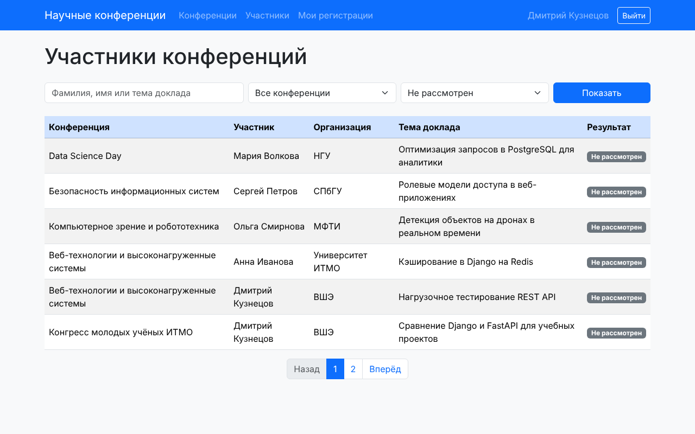
Рис. 10. Таблица участников для обычного пользователя, фильтр «Не рассмотрен», первая страница из двух
Права администратора в клиентском интерфейсе
Администратор (пользователь с is_staff) видит и делает в браузере больше обычного пользователя:
- в шапке ссылку «Админ-панель» и пометку «админ»;
- в таблице участников столбцы Email и «Изменить результат» с кнопками «Рекомендовать» и «Отклонить»;
- на карточках и странице конференции кнопку «Изменить» и на главной кнопку «Добавить конференцию» (ведут в Django-admin);
- кнопку «Удалить» у любого отзыва.
В шаблоне это обычная проверка {% if user.is_staff %}:
{% if user.is_staff %}
<td>{{ participation.user.email }}</td>
<td>
<form method="post" action="{% url 'set_result' participation.pk %}" class="d-flex gap-1">
{% csrf_token %}
<input type="hidden" name="next" value="{{ request.get_full_path }}">
<button name="result" value="recommended" class="btn btn-outline-success btn-sm">Рекомендовать</button>
<button name="result" value="rejected" class="btn btn-outline-danger btn-sm">Отклонить</button>
</form>
</td>
{% endif %}
Скрыть кнопку в шаблоне недостаточно: обычный пользователь может отправить POST-запрос на адрес сам. Поэтому представление set_result ещё раз проверяет is_staff и возвращает 403, если прав нет. @require_POST не даёт менять данные GET-запросом. Параметр next возвращает администратора на ту же страницу таблицы с теми же фильтрами, а url_has_allowed_host_and_scheme не даёт подставить в next адрес чужого сайта.
@login_required
@require_POST
def set_result(request, pk):
if not request.user.is_staff:
raise PermissionDenied
participation = get_object_or_404(Participation, pk=pk)
result = request.POST.get("result")
if result in dict(Participation.RESULT_CHOICES):
participation.result = result
participation.save()
next_url = request.POST.get("next", "")
if url_has_allowed_host_and_scheme(next_url, allowed_hosts={request.get_host()}):
return redirect(next_url)
return redirect("participant_list")
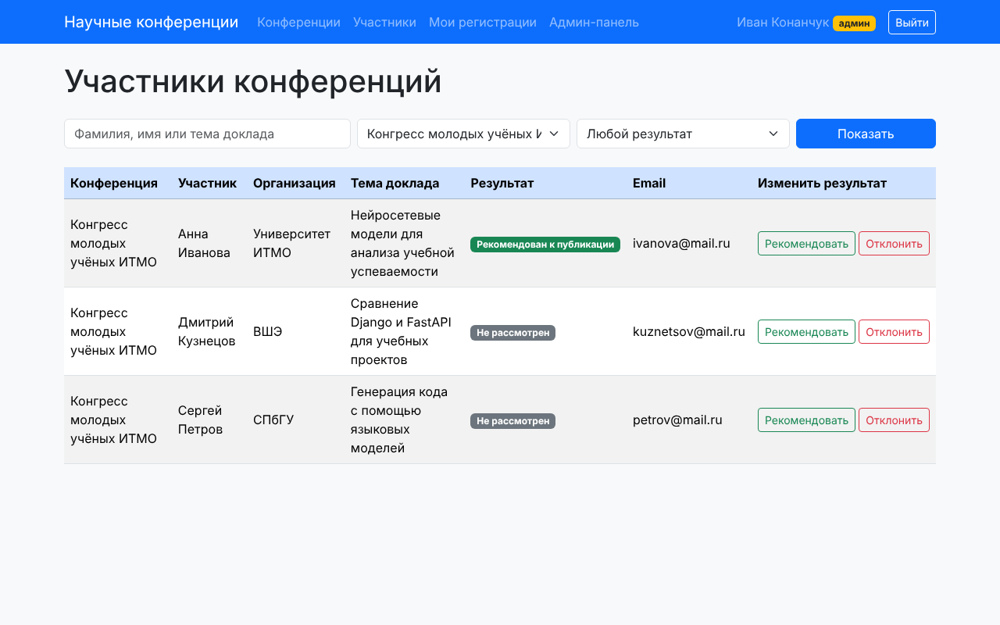
Рис. 11. Таблица участников «Конгресса молодых учёных ИТМО» для администратора: Email и кнопки результата
Результат выступления в Django-admin
По заданию результат указывается средствами Django-admin. В ParticipationAdmin поле result добавлено в list_editable, поэтому администратор меняет результаты прямо в списке выступлений и сохраняет одной кнопкой. Справа фильтры по результату и конференции.
from django.contrib import admin
from django.contrib.auth.admin import UserAdmin
from .models import Conference, Participation, Review, Topic, User
@admin.register(User)
class CustomUserAdmin(UserAdmin):
fieldsets = UserAdmin.fieldsets + (
("Научные данные", {"fields": ("organization", "academic_degree")}),
)
list_display = ["username", "last_name", "first_name", "organization", "is_staff"]
@admin.register(Topic)
class TopicAdmin(admin.ModelAdmin):
search_fields = ["name"]
@admin.register(Conference)
class ConferenceAdmin(admin.ModelAdmin):
list_display = ["name", "venue", "start_date", "end_date"]
list_filter = ["topics"]
search_fields = ["name", "venue"]
filter_horizontal = ["topics"]
@admin.register(Participation)
class ParticipationAdmin(admin.ModelAdmin):
list_display = ["user", "conference", "talk_title", "result"]
list_editable = ["result"]
list_filter = ["result", "conference"]
search_fields = ["talk_title", "user__last_name"]
@admin.register(Review)
class ReviewAdmin(admin.ModelAdmin):
list_display = ["user", "conference", "rating", "created_at"]
list_filter = ["conference", "rating"]
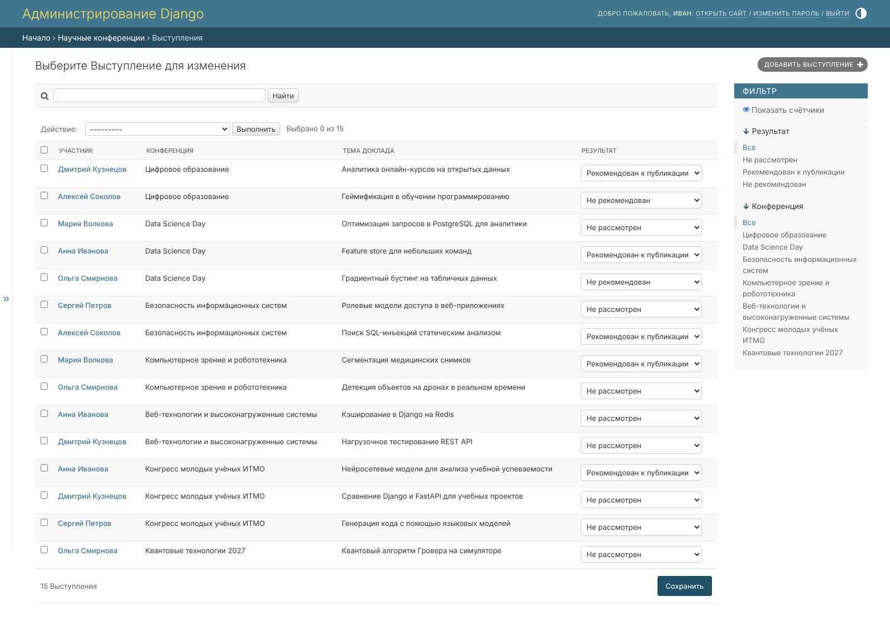
Рис. 12. Список выступлений в Django-admin, результат меняется выпадающим списком
Практики 2.1-2.3
Практики лежат в practical_works/simple_django_web_project/django_project_konanchuk, приложение project_first_app. База там SQLite, как в методичке.
- 2.1: создал проект и приложение, модель автовладельцев (владелец, автомобиль, владение, водительское удостоверение), зарегистрировал модели в админке, сделал страницу владельца
/owner/<id>/(функцияowner_detailи шаблонowner.html). - 2.2: связь автомобиля и владельца сделана через промежуточную модель
Ownershipс датами начала и конца (ManyToManyField(through="Ownership")). Список владельцев и форма создания владельца написаны функциями (FBV), список, просмотр, создание, изменение и удаление автомобиля написаны классами (CBV). - 2.3: владелец стал пользователем:
CarOwnerнаследуется отAbstractUserи хранит номер паспорта, домашний адрес и национальность. Новые поля выведены в админке, форма создания владельца построена наUserCreationForm.
from django.contrib.auth.models import AbstractUser
from django.db import models
class CarOwner(AbstractUser):
birth_date = models.DateField("Дата рождения", null=True, blank=True)
passport_number = models.CharField("Номер паспорта", max_length=20, blank=True)
home_address = models.CharField("Домашний адрес", max_length=200, blank=True)
nationality = models.CharField("Национальность", max_length=50, blank=True)
def __str__(self):
return f"{self.last_name} {self.first_name}"
class Car(models.Model):
state_number = models.CharField("Гос. номер", max_length=15)
brand = models.CharField("Марка", max_length=20)
model = models.CharField("Модель", max_length=20)
color = models.CharField("Цвет", max_length=30, null=True, blank=True)
owners = models.ManyToManyField(CarOwner, through="Ownership", related_name="cars")
def __str__(self):
return f"{self.brand} {self.model} ({self.state_number})"
class Ownership(models.Model):
owner = models.ForeignKey(CarOwner, on_delete=models.CASCADE)
car = models.ForeignKey(Car, on_delete=models.CASCADE)
start_date = models.DateField("Дата начала")
end_date = models.DateField("Дата конца", null=True, blank=True)
class DriverLicense(models.Model):
owner = models.ForeignKey(CarOwner, on_delete=models.CASCADE, related_name="licenses")
number = models.CharField("Номер удостоверения", max_length=10)
type = models.CharField("Тип", max_length=10)
issue_date = models.DateField("Дата выдачи")
Выводы
Я сделал сайт научных конференций на Django 5.2 и PostgreSQL 18. Модель данных состоит из пяти таблиц: пользователь на основе AbstractUser, тематики со связью многие ко многим, конференции, регистрации на выступления и отзывы. Пользователь регистрируется, смотрит конференции, записывается с докладом, меняет и удаляет только свои регистрации и пишет отзывы с рейтингом от 1 до 10. Администратор ставит результат выступления в Django-admin через list_editable и прямо в таблице участников на сайте.
Для максимального балла я оформил интерфейс на Bootstrap, сделал пагинацию на двух страницах, поиск и фильтры, которые сохраняются при переходе по страницам через {% querystring %}, и разграничил права через {% if user.is_staff %} в шаблонах с повторной проверкой в представлении. Чужие записи защищены фильтром в get_queryset(), поэтому на чужой id сайт отвечает 404.